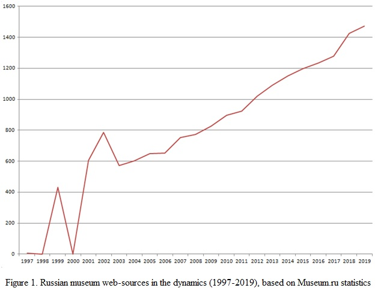

The history of virtual museums began long before the appearance of web-museums on the Internet. Its trajectory is associated with the deepening and intensification of the use of information technologies in various areas of museums. The modern information environment has reached a high level of development, and users can now have many varied experiences online in order to engage with digital cultural heritage.
It is very difficult to give a modern definition of the term “virtual museum”, since an updated definition of the term “museum” is still under development by ICOM. A group of experts working on a large European VIMM project gave the following definition of the concept of "virtual museum" as “a digital entity that draws on the characteristics of a museum, in order to complement, enhance, or augment the museum through personalization, interactivity, user experience and richness of content” [1].
The digital history of virtual museums has been previously considered from different perspectives. Erkki Huhtamo’s article is noteworthy as leading the early history of virtual museums from the pre-digital era and changing the way they look at exhibition design [2]. Paul L. Arthur approached the comprehension of the history of virtual museums from the point of view of the role and importance of interactivity, increasing the ability of the user to receive diverse experience in the online environment [3]. It should be noted that the history of virtual museums has been formerly examined in a global context, while this work is devoted to the peculiarities of the history of virtual museums in the post-Soviet space.
The focus of this study is virtual museums in the post-Soviet space, which includes the former Soviet republics that left the USSR after its collapse in 1991.
The main source for studying the digital history of virtual museums has become the resources of web archives. The Museum.ru resource, snapshots of which are presented in WayBack Machine [4], has become an important source of information for studying Russian museum web space. The site was created as a platform for museums, allowing each museum to create its own web-museum resource with a wide range of capabilities. The specified aggregator contains statistics on such web resources, which is presented in the diagram (Fig. 1).

It should be noted that the initial policy of this site was to provide space on the platform to any organization claiming to be a “virtual museum”. Until 2003 many private initiatives were placed there and they were not related to the GLAM industry. Since 2003, only web resources of actual existing museums of Russia have remained in the catalog (no statistics were available for 2000).
As a result of the work on the project, the following main features of the history of virtual museums of the post-Soviet space can be highlighted:
First, during the existence of the USSR, the experience of using information technologies in museums was limited to separate experiments of documenting individual collections (for example, the Hermitage developed an information system for data processing of antique art bronze and petroglyphs of Central Asia). With the collapse of the USSR, the globalization of the market in the post-Soviet space, and the widespread penetration of computers and software from Western countries, it was necessary to abandon partially the accumulated experience due to the technical incompatibility of Soviet technologies with the new foreign hardware and software. Whereas European and North-American countries actively used multimedia content, making it the central element of virtual museums online, in the post-Soviet space multimedia rarely went into the virtual space, firmly entrenched in the commercial sector with access to CDs.
Secondly, since the beginning of the Internet era, non-profit and philantropic organizations that support and stimulate the development of this sector, in particular the non-profit partnership “Museum Automation and Information Technology” (ADIT), have been significant in the development of the museum environment. Non-governmental grant organizations support the community of museum professionals in the post-Soviet space, introducing innovations in museums and developing virtual museums. Among the countries studied, Russia has one of the leading positions in the development of a virtual museum space in technological and innovation terms.
Thirdly, the representation of museum collections has gone from simple illustrations and museum narrative on exhibition topics to digital catalogs with a wide range of search possibilities, digital excursions and museum storytelling. An issue to note is the limited work with open licenses for the use of digital objects, which complicates the wider use of collections.
Fourth, searches for the digital identity of virtual museums in different countries of the post-Soviet space, as well as an analysis of the visual images used, demonstrate a certain degree of dependence on the official political discourse. This is most acute in Russian and Ukrainian virtual museums of history, which showed a change of images after the events of 2014 and the aggravation of inter-state relations.
In general, the digital history of the virtual museums of the former Soviet Union shows that the most advanced virtual museums have a long digital history, such as The Pushkin State Museum of Fine Arts. The general level of virtual museums is significantly behind those globally in the quality of digitization, the methods of storytelling in web museums, and the creation of an audience-oriented digital content. At the same time, history shows that it is possible to adopt the positive experience of leading museums for effective further development.
References:
[1] Virtual Multimodal Museum. ViMM Plus. URL: https://www.vi-mm.eu/2018/01/10/the-vimm-definition-of-a-virtual-museum, last accessed: 10/06/2020
[2] Huhtamo, E. (2002) On the Origins of the Virtual Museum, Nobel Symposium “Virtual Museums and Public Understanding of Science and Culture” May 26-29, 2002, Stockholm.
[3] Arthur P. L. (2018). Engaging Collections and Communities: Technology and Interactivity in Museums. In Proceedings of the Digital Humanities in the Nordic Countries. 3-rd Conference, Helsinki, Finland, March 7-9, 2018. Pp. 250-262.
[4] WayBack Machine. Internet Archive. URL: https://archive.org/web/, last accessed: 10/06/2020.